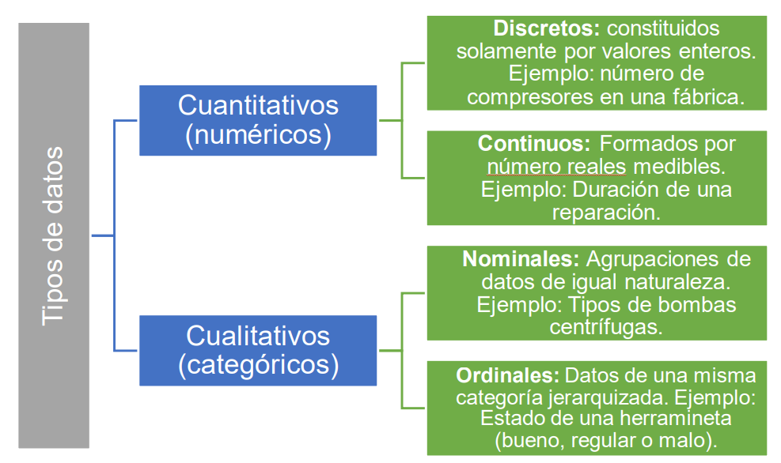
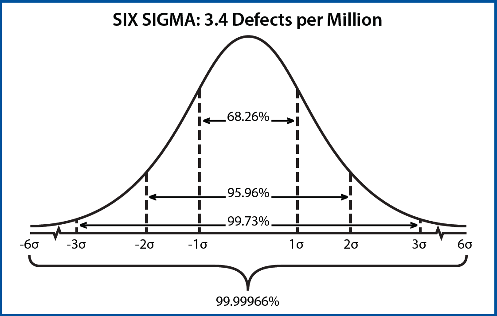
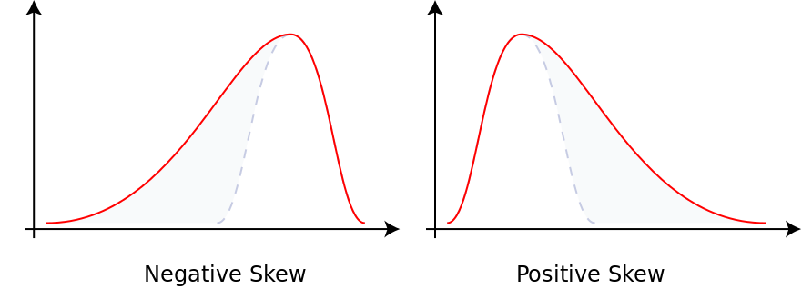
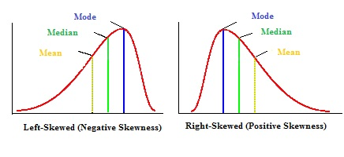
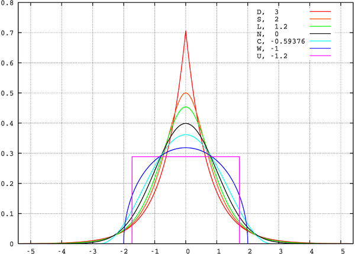
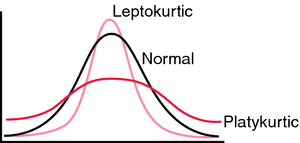
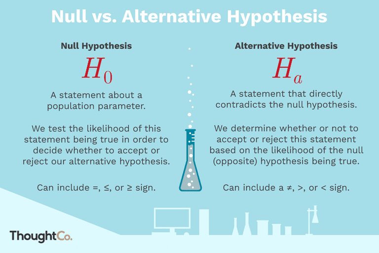

Modulo 3: Análisis exploratorio de datos de la banca#
La estadística descriptiva proporciona un marco para resumir y visualizar grandes volúmenes de datos financieros, como transacciones, historiales crediticios y comportamientos del mercado. Mediante el uso de medidas como la media, la mediana, la desviación estándar y los percentiles, los bancos pueden identificar patrones en el comportamiento de los clientes, como tendencias de gasto, ahorro y tasas de incumplimiento de crédito. Esta información es crucial para segmentar clientes, diseñar estrategias de marketing personalizadas y mejorar la gestión de carteras de productos financieros.
Por otro lado, la estadística inferencial permite a los bancos realizar predicciones y tomar decisiones informadas bajo incertidumbre. A través de técnicas como pruebas de hipótesis, modelos de regresión y análisis de varianza (ANOVA), se puede inferir, por ejemplo, la probabilidad de que un cliente incumpla un préstamo o proyectar tendencias económicas como las tasas de interés e inflación. Estas inferencias son vitales para la gestión del riesgo crediticio y la planificación financiera a largo plazo.
Complementando estos enfoques tradicionales, se encuentran técnicas avanzadas como el Análisis de Componentes Principales (PCA) y el Clustering, que ofrecen una perspectiva más profunda y efectiva en el manejo de datos complejos. El PCA es una técnica de reducción de dimensionalidad que permite simplificar conjuntos de datos de alta dimensión al identificar las variables más influyentes. En el sector bancario, PCA es fundamental para optimizar los modelos de puntuación crediticia, identificando los factores clave que afectan la solvencia de los clientes y mejorando así la precisión en la evaluación del riesgo.
El Clustering, por su parte, es una técnica de aprendizaje no supervisado que agrupa datos en clusters o grupos de clientes con comportamientos similares. Esta técnica es ampliamente utilizada en la segmentación de clientes, ayudando a los bancos a personalizar sus ofertas de productos y servicios, mejorar las campañas de marketing, y aumentar la satisfacción del cliente. Además, el clustering es extremadamente útil en la detección de fraudes, al identificar transacciones que se desvían de los patrones normales de comportamiento, permitiendo a los bancos reaccionar de manera proactiva frente a posibles actividades fraudulentas.
En conjunto, la combinación de estadística descriptiva e inferencial con técnicas avanzadas como PCA y Clustering ofrece a las instituciones bancarias un enfoque integral para analizar y aprovechar sus datos. Este módulo se centrará en cómo aplicar estas técnicas estadísticas y de aprendizaje automático en el análisis de datos bancarios, proporcionando a los participantes una comprensión sólida de cómo estas herramientas pueden ser utilizadas para enfrentar desafíos específicos en el sector financiero y potenciar la toma de decisiones basada en datos.
Estadística descriptiva#
La estadística descriptiva es una rama de las matemáticas que se encarga de analizar, interpretar y presentar de manera estructurada los datos obtenidos a través de diferentes fuentes. Con Python y sus múltiples librerías de análisis de datos, podemos realizar de manera sencilla estadística descriptiva. Para el desarrollo óptimo de la parte estadística debemos conocer las funciones implementadas en python Enlace
Población y muestra#
La estadística es la ciencia de recolectar, organizar, analizar e interpretar información. Las estadísticas son números obtenidos de un conjunto o colección de datos.
Una población es el total de la información o de los objetos de interés para un estadístico en una investigación particular.
Una muestra es cualquier subconjunto de una población.
Un dato es un número o denominaciones que podemos asignar a un individuo o elemento de la población.
Una variable aleatoria son fenómenos o características medibles de los elementos de la población. Ejemplo: sexo, edad, peso, estatura, color de ojos, estado civil, temperatura, cantidad de nacimientos, presión, diámetro, etc, esta medición genera como resultado la obtención de datos
Un parámetro es cualquier característica numérica de una población.
Un estadístico es cualquier caractrística numérica de una muestra.
Tipos de datos#
De forma general los datos se clasifican en cuantitativos o numéricos y cualitativos o categóricos, mismos que se subdividen tal como se indica en la siguiente figura:

Analicemos el siguiente conjunto de datos:
Contexto empresarial. Los préstamos entre pares (P2P) en línea han facilitado la práctica de pedir y prestar dinero. En esta forma de préstamo, no hay una entrevista en persona y el prestatario puede simplemente completar un formulario en línea y obtener la aprobación del préstamo. La información proporcionada únicamente por el prestatario es propensa a exageraciones y distorsiones, especialmente cuando se trata de ingresos. Todas las empresas de préstamos entre pares se basan en un procedimiento bien diseñado que rechaza a los prestatarios con una alta probabilidad de no pagar sus deudas.
Rechazar a cualquier persona que no tenga una fuente de ingresos verificada es una política relevante que las plataformas de préstamos pueden implementar para ayudar a reducir la tasa de préstamos incobrables. Es natural sospechar que si no se puede verificar la fuente de ingresos de una persona, es posible que no pueda pagar el préstamo. Sin embargo, desde la perspectiva de un prestatario, el proceso de verificación puede ser engorroso y llevar mucho tiempo, y es posible que simplemente cambie de plataforma debido a este inconveniente.
Problema empresarial. Como científico de datos de una empresa emergente de préstamos P2P, debe responder a la siguiente pregunta: “¿Debería la empresa verificar la fuente de ingresos de un solicitante de préstamo en línea antes de aprobar su préstamo?”
Contexto analítico. Los datos son de LendingClub (LC) Statistics y contienen todos los préstamos emitidos entre 2007 y 2012 junto con su estado actual (pagados en su totalidad o cancelados). Hay aproximadamente 50 variables que describen a los prestatarios y los préstamos; con el fin de reducir la complejidad, la empresa ya ha realizado una preselección de estas variables en función de los análisis existentes de LendingClub para seleccionar nueve variables relevantes, como los ingresos anuales, la calificación crediticia de LendingClub, la propiedad de la vivienda, etc. Utilizaremos una nueva técnica, la regresión logística , para responder a nuestra pregunta en cuestión.
Echemos un vistazo a los datos que tenemos a nuestra disposición:
import warnings
warnings.filterwarnings("ignore", category=FutureWarning)
# Cargar paquetes
import pandas as pd
import numpy as np
import matplotlib.pyplot as plt
df = pd.read_csv('_data/datadescrip/Lending_club_cleaned_2.csv')
df.head()
| loan_status | annual_inc | verification_status | emp_length | home_ownership | int_rate | loan_amnt | purpose | term | grade | |
|---|---|---|---|---|---|---|---|---|---|---|
| 0 | Fully Paid | 24000.0 | Verified | 10+ years | RENT | 10.65% | 5000 | credit_card | 36 months | B |
| 1 | Charged Off | 30000.0 | Source Verified | < 1 year | RENT | 15.27% | 2500 | car | 60 months | C |
| 2 | Fully Paid | 12252.0 | Not Verified | 10+ years | RENT | 15.96% | 2400 | small_business | 36 months | C |
| 3 | Fully Paid | 49200.0 | Source Verified | 10+ years | RENT | 13.49% | 10000 | other | 36 months | C |
| 4 | Fully Paid | 80000.0 | Source Verified | 1 year | RENT | 12.69% | 3000 | other | 60 months | B |
Esta es la descripción de las variables
Variable |
Descripción |
|---|---|
loan_status |
La primera columna indica si el prestatario pagó el préstamo (pagado en su totalidad Fully Paid) o no (dañó el préstamo Charged Off). |
annual_inc |
El ingreso anual autodeclarado proporcionado por el prestatario durante el registro. |
verification_status |
Indica si el ingreso fue verificado por LC, no verificado, o si la fuente de ingresos fue verificada. |
emp_length |
La duración del empleo en años. Los valores posibles están entre 0 y 10, donde 0 significa menos de un año y 10 significa diez o más años. |
home_ownership |
El estado de propiedad de la vivienda proporcionado por el prestatario durante el registro u obtenido del informe crediticio. Los valores son: RENT, OWN, MORTGAGE, OTHER. |
int_rate |
Tasa de interés del préstamo. |
loan_amnt |
El monto listado del préstamo solicitado por el prestatario. Si en algún momento el departamento de crédito reduce el monto del préstamo, se reflejará en este valor. |
purpose |
Una categoría proporcionada por el prestatario para la solicitud de préstamo. |
term |
El número de pagos del préstamo. Los valores están en meses y pueden ser 36 o 60. |
grade |
Calificación del préstamo asignada por LC. |
df.info()
<class 'pandas.core.frame.DataFrame'>
RangeIndex: 38705 entries, 0 to 38704
Data columns (total 10 columns):
# Column Non-Null Count Dtype
--- ------ -------------- -----
0 loan_status 38705 non-null object
1 annual_inc 38705 non-null float64
2 verification_status 38705 non-null object
3 emp_length 38705 non-null object
4 home_ownership 38705 non-null object
5 int_rate 38705 non-null object
6 loan_amnt 38705 non-null int64
7 purpose 38705 non-null object
8 term 38705 non-null object
9 grade 38705 non-null object
dtypes: float64(1), int64(1), object(8)
memory usage: 3.0+ MB
Realicemos una limpieza de los datos para realizar el análisis exploratorio
#Cambiar loan_status, verification_status, emp_length, term y grade al tipo categórico
df.loan_status = df.loan_status.astype(pd.api.types.CategoricalDtype(categories=['Charged Off', 'Fully Paid']))
df.verification_status = df.verification_status.astype(pd.api.types.CategoricalDtype(categories=['Not Verified', 'Source Verified', 'Verified']))
df.emp_length = df.emp_length.astype(pd.api.types.CategoricalDtype(categories=['< 1 year', '1 year', '2 years', '3 years', '4 years', \
'5 years', '6 years', '7 years', '8 years', '9 years', \
'10+ years']))
df.home_ownership = df.home_ownership.astype(pd.api.types.CategoricalDtype(categories=['RENT','MORTGAGE','OWN','OTHER']))
df.term = df.term.astype(pd.api.types.CategoricalDtype(categories=[' 36 months', ' 60 months']))
df.grade = df.grade.astype(pd.api.types.CategoricalDtype(categories=['A','B','C','D','E','F','G']))
df.purpose = df.purpose.astype(pd.api.types.CategoricalDtype(categories=['debt_consolidation', 'credit_card', 'other', 'home_improvement',
'major_purchase', 'small_business', 'car', 'wedding', 'medical',
'moving', 'house', 'vacation', 'educational', 'renewable_energy']))
#Además, los datos originales en int_rate contienen cadenas en la forma 'x.xx%',
#eliminamos el % y cambiamos los valores a tipo float:
df.int_rate = df.int_rate.str.rstrip('%').astype('float')
df.head()
| loan_status | annual_inc | verification_status | emp_length | home_ownership | int_rate | loan_amnt | purpose | term | grade | |
|---|---|---|---|---|---|---|---|---|---|---|
| 0 | Fully Paid | 24000.0 | Verified | 10+ years | RENT | 10.65 | 5000 | credit_card | 36 months | B |
| 1 | Charged Off | 30000.0 | Source Verified | < 1 year | RENT | 15.27 | 2500 | car | 60 months | C |
| 2 | Fully Paid | 12252.0 | Not Verified | 10+ years | RENT | 15.96 | 2400 | small_business | 36 months | C |
| 3 | Fully Paid | 49200.0 | Source Verified | 10+ years | RENT | 13.49 | 10000 | other | 36 months | C |
| 4 | Fully Paid | 80000.0 | Source Verified | 1 year | RENT | 12.69 | 3000 | other | 60 months | B |
df.info()
<class 'pandas.core.frame.DataFrame'>
RangeIndex: 38705 entries, 0 to 38704
Data columns (total 10 columns):
# Column Non-Null Count Dtype
--- ------ -------------- -----
0 loan_status 38705 non-null category
1 annual_inc 38705 non-null float64
2 verification_status 38705 non-null category
3 emp_length 38705 non-null category
4 home_ownership 38705 non-null category
5 int_rate 38705 non-null float64
6 loan_amnt 38705 non-null int64
7 purpose 38705 non-null category
8 term 38705 non-null category
9 grade 38705 non-null category
dtypes: category(7), float64(2), int64(1)
memory usage: 1.1 MB
Análisis univariado#
Si la variable es categórica.
Medidas de conteo y proporciones#
El análisis de frecuencia es una técnica estadística que se utiliza para contar la cantidad de veces que ocurre cada categoría o valor dentro de una variable, generalmente en variables categóricas o discretas. Este tipo de análisis ayudar a identificar patrones 0 valores más comunes.
Componentes clave del análisis de frecuencia:
Frecuencia Absoluta o conteo: El número de veces que un valor o categoría específico aparece en el conjunto de datos.
# conteo
df['loan_status'].value_counts()
Frecuencia Relativa o proporciones: Es la proporción o porcentaje de veces que ocurre un valor o categoría en relación con el total de observaciones.
# Proporciones
df['loan_status'].value_counts(normalize=True)
Veamos otra variable categórica
# Descriptivo de una sola variable categórica solo conteo
conteo = df['grade'].value_counts()
print(conteo)
# Descriptivo de una sola variable categórica solo proporcion
proporciones = df['grade'].value_counts(normalize=True)
print(proporciones)
# Combinar los resultados en un solo DataFrame
resultado = pd.DataFrame({
'Conteo': conteo,
'Proporción': proporciones
})
# imprimir
print(resultado)
grade
B 11697
A 9694
C 7938
D 5213
E 2811
F 1035
G 317
Name: count, dtype: int64
grade
B 0.302209
A 0.250459
C 0.205090
D 0.134685
E 0.072626
F 0.026741
G 0.008190
Name: proportion, dtype: float64
Conteo Proporción
grade
B 11697 0.302209
A 9694 0.250459
C 7938 0.205090
D 5213 0.134685
E 2811 0.072626
F 1035 0.026741
G 317 0.008190
Si nuestra variable es numérica.
Medidas de tendencia central#
Media aritmética o promedio: Para un conjunto de \(n\) valores \(x_{1},x_{2},\dots,x_{n}\) que representan una muestra, la
df['annual_inc'].mean()
Mediana: Se denotará como \(\tilde{x}\) para la muestra. Para un conjunto de valores ordenados se tiene:
df['annual_inc'].median()
Moda: Se denotapor \(\hat{x}\), es el dato u observación que más se repite. Los conjuntos pueden ser unimodales, bimodales o multimodales. Se puede calcular para datos cualitativos y cuantitativos.
# Calcula la moda y su frecuencia
mode_value = df['annual_inc'].mode()[0]
freq = df['annual_inc'].value_counts()[mode_value]
# Imprime la moda y la frecuencia
print("Moda: ", mode_value, " Frecuencia: ", freq)
Moda: 60000.0 Frecuencia: 1474
Ventajas
La media siempre se puede calcular.
La mediana no se afecta por valores extremos
La moda no se afecta por valores extremos. Única medida de tendencia central para datos categóricos.
Desventajas
La media se ve afectada por valores extremos
Cuando la cantidad de datos es mucha, no es fácilmente de forma manual calcular la mediana.
No siempre hay moda. A veces puede existir, pero no ser única.
Medidas de dispersión#
La varianza \(s^2\) de una muestra con valores \(x_1,\ldots,x_n\) se define por
donde \(\overline{x}\) es la media de \(x_1,\ldots,x_n\).
La desviación estándar \(s\) muestral de un conjunto de datos \(x_1,\ldots,x_n\) se define por
np.std(df['annual_inc'])
64222.95377876642
coeficiente de variación de Pearson \(CV\) de un conjunto de datos se define por
donde \(s\) y \(\overline{x}\) son la desviación estándar de los datos y la media aritmética de los datos, respectivamente.
# Calcular la media y la desviación estándar
media = df['annual_inc'].mean()
desviacion_estandar = df['annual_inc'].std()
# Calcular el coeficiente de variación (CV)
cv = (desviacion_estandar / media) * 100
print(f"El coeficiente de variación es: {cv:.2f}%")
Medidas de posición#
El \(p\)-ésimo (punto) percentil es un valor tal que a lo más un \(p\%\) de los datos tienen dicho valor o menos.
Los cuartiles son las medidas de posición relativa correspondientes a un conjunto de datos divididos en cuatro partes iguales. Se definen así:
\(Q_{1}\): Primer cuartil (25-ésimo percentil)
\(Q_{2}\): Segundo cuartil (50-ésimo percentil o mediana)
\(Q_{3}\): Tercer cuartil (75-ésimo percentil)
El proceso para calcular un cuartil es:
Ordenar los \(n\) datos de menor a mayor.
Calcular un índice \(i\) a través de la fórmula:
\[ i = \frac{n \cdot k}{4} \]siendo \(n\) la cantidad de datos y \(k = 1, 2, 3\).
El cálculo del \(k\)-ésimo cuartil depende de si \(i\) es entero o no:
Si \(i\) no es entero: Se redondea al entero siguiente. Esta aproximación indica la posición del \(k\)-ésimo cuartil.
Si \(i\) es entero: El \(k\)-ésimo cuartil es el promedio de los valores de los datos ubicados en las posiciones \(i\) y \(i+1\).
# Calcular los cuartiles
q1 = df['annual_inc'].quantile(0.25)
q2 = df['annual_inc'].quantile(0.50) # Este es la mediana
q3 = df['annual_inc'].quantile(0.75)
print(f"Primer cuartil (Q1): {q1}")
print(f"Segundo cuartil (Q2 o Mediana): {q2}")
print(f"Tercer cuartil (Q3): {q3}")
Primer cuartil (Q1): 41496.0
Segundo cuartil (Q2 o Mediana): 60000.0
Tercer cuartil (Q3): 83200.0
Una distribución es simétrica cuando la moda, la mediana y la media son aproximadamente iguales. En términos más coloquiales, las mitades izquierda y derecha de la distribución se ven idénticas, y ambas mitades comienzan con picos altos y se desvanecen a medida que uno se mueve hacia las “colas”.

Una distribución tiene sesgo a la derecha - Sesgo positivo si la “cola” a la derecha de la media es más larga que la de la izquierda. De la misma manera, una distribución tiene sesgo a la izquierda - Sesgo negativo si la “cola” a la izquierda de la media es más larga que la de la derecha. Estos son ejemplos de distribuciones asimétricas.


Las distribuciones asimétricas suelen ser problemáticas, ya que la mayoría de los métodos estadísticos están desarrollados para distribuciones normales, que son simétricas. Para superar estos problemas, generalmente se realizan transformaciones en los datos para que se asemejen más a una distribución normal. Esto se discutirá con mayor profundidad más adelante.
El coeficiente de asimetría (skewness) se calcula con la siguiente fórmula:
donde:
\( n \) es el número de observaciones.
\(x_i \) es el valor individual.
\(\bar{x}\) es la media de los valores.
\( s\) es la desviación estándar.
from scipy.stats import skew
skewness = skew(df['annual_inc'])
print(f'Coeficiente de asimetría: {skewness}')
Coeficiente de asimetría: 31.072660663606374
Un coeficiente de asimetría de \(31.07\) es extremadamente alto y sugiere que la distribución de los datos en la columna annual_inc tiene una asimetría significativa hacia la derecha (sesgo positivo). Esto significa que la mayoría de los datos están concentrados en el lado izquierdo de la distribución, con una cola larga hacia la derecha.
Otra medida es la curtosis:
Curtosis en exceso se define generalmente como curt – 3, una medida de la “puntiagudez” de la distribución de probabilidad de una variable aleatoria con valores reales.
La curtosis en exceso para una distribución normal es 0 (es decir, 3 - 3 = 0). Un exceso negativo implica colas más ligeras que una distribución normal. Un exceso positivo implica colas más pesadas que una distribución normal.


La curtosis (kurtosis) se calcula con la siguiente fórmula:
donde:
\(n\) es el número de observaciones.
\(x_i\) es el valor individual.
\(\bar{x}\) es la media de los valores.
\(s\) es la desviación estándar.
from scipy.stats import kurtosis
# Calcular la curtosis
curtosis = kurtosis(df['annual_inc'], fisher=True)
# Imprimir el resultado
print(f'Curtosis en exceso: {curtosis}')
Curtosis en exceso: 2298.548701935856
Un valor de \(2298.55\) para la curtosis en exceso es extremadamente alto. Esto indica que la distribución de los datos en la columna annual_inc es muy puntiaguda y tiene colas muy pesadas en comparación con una distribución normal.
El rango intercuartil, \(RI\), es la distancia entre el primer y el tercer cuartil:
Valor atípico: Todo valor que está a más de \(1.5RI\) de distancia del cuartil más cercano se dice que es atípico.Todo datos que se salga de este intervalo \((Q_1-1.5RI,Q_3+1.5RI)\) es un valor atípico.
plt.figure(figsize=(10, 6))
plt.boxplot(df['annual_inc'])
plt.title('Gráfico de Cajas y Bigotes de annual_inc')
plt.ylabel('annual_inc')
plt.grid(True)
# Mostrar el gráfico
plt.show()
Realicemos todo en una sola celda
# importar
import pandas as pd
from scipy.stats import skew, kurtosis
# Agregaciones estándar con pandas
resumen = df['annual_inc'].agg({
'Promedio': 'mean', # Media
'Desviacion_Estandar': 'std', # Desviación Estándar
'Minimo': 'min', # Mínimo
'Maximo': 'max', # Máximo
'Mediana': 'median', # Mediana
'Cuantil 1': lambda x: x.quantile(0.25), # Cuantil 25%
'Cuantil 3': lambda x: x.quantile(0.75) # Cuantil 75%
})
# Agregar funciones personalizadas
resumen['Asimetría'] = skew(df['annual_inc'].dropna())
resumen['Curtosis'] = kurtosis(df['annual_inc'].dropna())
# Mostrar el resultado
print(pd.DataFrame(resumen))
annual_inc
Promedio 6.961750e+04
Desviacion_Estandar 6.422378e+04
Minimo 4.000000e+03
Maximo 6.000000e+06
Mediana 6.000000e+04
Cuantil 1 4.149600e+04
Cuantil 3 8.320000e+04
Asimetría 3.107266e+01
Curtosis 2.298549e+03
La biblioteca ydata-profiling es la evolución de lo que anteriormente se conocía como pandas_profiling. Es una herramienta que genera perfiles exploratorios detallados de los datos en un DataFrame de pandas de forma automática, facilitando el análisis inicial de los datos con resúmenes estadísticos, gráficos y observaciones.
Características principales
Resúmenes de variables: Te proporciona un resumen de cada columna, incluyendo estadísticas clave como media mediana, varianza, y distribuciones.
Valores faltantes: Identifica la cantidad de valores faltantes por columna y su distribución.
Correlaciones: Presenta una matriz de correlaciones entre variables numéricas.
Interacciones: Muestra relaciones significativas entre dos variables.
Distribuciones: Genera histogramas y gráficos de densidad para las variables numéricas y categóricas.
Alertas: Te notifica sobre datos problemáticos como valores altamente correlacionados, duplicados o valores constantes.
Con esta herramienta, puedes automatizar gran parte del análisis exploratorio de datos (EDA) y obtener insights rápidos sobre tus datos.
Para usar ydata_profiling, primero necesitas instalarlo.
Luego, en tu script de Python, puedes usarlo de esta manera:
import pandas as pd
from ydata_profiling import ProfileReport
# Generar informe de perfilado
profile = ProfileReport(
df,
title="Profiling Report",
explorative=True, # Modo explorativo para incluir más visualizaciones
correlations={
"pearson": {"calculate": True},
"spearman": {"calculate": True},
"kendall": {"calculate": False},
"phi_k": {"calculate": False},
"cramers": {"calculate": False},
},
plot={
"histogram": {"bins": 30}, # Ajustar número de bins para histogramas
"scatter_threshold": 1000, # Limitar número de puntos en scatter plots
"boxplot": {"enabled": True}, # Asegurarse de que los boxplots estén habilitados
},
missing_diagrams={
"heatmap": True, # Incluye heatmap de valores faltantes
"dendrogram": True, # Incluye dendrograma de valores faltantes
}
)
profile.to_file('_image/dashboard.html')
Summarize dataset: 100%|██████████| 30/30 [00:02<00:00, 14.22it/s, Completed]
Generate report structure: 100%|██████████| 1/1 [00:02<00:00, 2.52s/it]
Render HTML: 100%|██████████| 1/1 [00:00<00:00, 1.60it/s]
Export report to file: 100%|██████████| 1/1 [00:00<?, ?it/s]
Distribuciones#
Un histograma muestra la frecuencia de ocurrencias de datos en un gráfico de barras. Más específicamente, indica con qué frecuencia ocurre cada valor distinto en el conjunto de datos. El eje horizontal representa los valores del conjunto de datos y el eje vertical representa el número de veces que ocurren esos valores.
Un histograma es un ejemplo específico de una distribución.
Las distribuciones continuas permiten que los datos tomen un número infinito de valores posibles. Algunos ejemplos incluyen:
Normal
Gamma
\(\chi\)-cuadrada
\(t\) de Student
etc.
Por otro lado, las distribuciones discretas son aquellas en las que los datos solo pueden ser uno de un conjunto finito de valores. Los histogramas son distribuciones discretas porque los valores posibles deben provenir directamente del conjunto de datos del que se crean, que por definición debe ser un conjunto finito. Otros ejemplos de distribuciones discretas incluyen:
Poisson
Binomial
Hipergeométrica
Bernoulli
etc.

Más información sobre distribuciones aquí
Distribución normal#
La distribución normal es una de las distribuciones más importantes, ya que es la que con mayor frecuencia aproxima fenómenos del mundo real. Tiene una forma “campana” y es simétrica:
import matplotlib.pyplot as plt # importando matplotlib
import seaborn as sns # importando seaborn
# parametros esteticos de seaborn
sns.set_palette("deep", desat=.6)
sns.set_context(rc={"figure.figsize": (8, 4)})
mu, sigma = 0, 0.1 # promedio y desviación estandar
s = np.random.normal(mu, sigma, 1000) # creacion de datos N(mu,sd)
# histograma
count, box, omit = plt.hist(s, 30, density=True)
normal = plt.plot(box, 1/(sigma * np.sqrt(2 * np.pi)) *
np.exp( - (box - mu)**2 / (2 * sigma**2) ),
linewidth=2, color='r')
Distribución Gamma#
La distribución Gamma es una distribución continua que se utiliza frecuentemente para modelar tiempos de espera o eventos que ocurren de manera continua y aleatoria. Esta distribución es asimétrica y, a diferencia de la distribución normal, puede tomar diferentes formas dependiendo de los parámetros que se utilicen.
Es comúnmente usada en el análisis de la vida de productos, modelos de riesgo, y en muchos otros contextos donde se desea modelar el tiempo entre eventos.
import scipy.stats as stats # importando scipy.stats para la gamma
# parámetros estéticos de seaborn
sns.set_palette("deep", desat=.6)
sns.set_context(rc={"figure.figsize": (8, 4)})
# Generación de datos de la distribución Gamma
shape_param = 3
x = stats.gamma(shape_param).rvs(5000) # gamma(3) con 5000 muestras
# Histograma
gamma = plt.hist(x, 70, histtype="stepfilled", alpha=.7, density=True)
# Crear una curva de densidad (PDF) de la distribución Gamma
xmin, xmax = plt.xlim()
x_vals = np.linspace(xmin, xmax, 100)
pdf_vals = stats.gamma.pdf(x_vals, shape_param)
# Graficar la función de densidad
plt.plot(x_vals, pdf_vals, 'r-', lw=2)
# Mostrar el gráfico
plt.title('Distribución Gamma con función de densidad')
plt.xlabel('Valor')
plt.ylabel('Densidad')
plt.show()
Ahora, usemos los datos son de LendingClub (LC) Statistics, exactamente la variable int_rate.
# Importar seaborn
import seaborn as sns
# Histograma de las ventas semanales con Seaborn
sns.histplot(df['int_rate'], bins=20, kde=False) # kde=True si quieres agregar la densidad
plt.show()
Debemos mirar graficamente que distribución es:
# Ajustar distribuciones (Normal, Gamma, Exponencial)
from scipy.stats import norm, gamma, expon
x = df['int_rate'].dropna()
# Ajuste de distribución normal
params_norm = norm.fit(x)
x_norm = np.linspace(x.min(), x.max(), 100)
pdf_norm = norm.pdf(x_norm, *params_norm)
# Ajuste de distribución gamma
params_gamma = gamma.fit(x)
pdf_gamma = gamma.pdf(x_norm, *params_gamma)
# Ajuste de distribución exponencial
params_expon = expon.fit(x)
pdf_expon = expon.pdf(x_norm, *params_expon)
# Graficar histogramas con distribuciones ajustadas
plt.figure(figsize=(10, 6))
sns.histplot(x, bins=20, kde=False, color='skyblue', stat='density', label='Data Histogram')
plt.plot(x_norm, pdf_norm, 'r-', label='Normal Distribution Fit')
plt.plot(x_norm, pdf_gamma, 'g-', label='Gamma Distribution Fit')
plt.plot(x_norm, pdf_expon, 'b-', label='Exponential Distribution Fit')
plt.xlabel('Interest Rate (%)')
plt.ylabel('Density')
plt.title('Distribution Fitting for Interest Rates')
plt.legend()
plt.show()
Ahora, realizaremos una prueba no paramétrica para ver si sigue o no una distribución normal.
from scipy.stats import kstest, shapiro, anderson
from statsmodels.stats.diagnostic import lilliefors
# Prueba de Kolmogorov-Smirnov para la distribución Normal
ks_norm = kstest(x, 'norm', args=params_norm)
# Prueba de Lilliefors (similar al KS test pero ajustado para normalidad)
lillie_result = lilliefors(x, dist='norm')
# Prueba de Shapiro-Wilk para normalidad
shapiro_result = shapiro(x)
# Prueba de Anderson-Darling para la distribución Normal
anderson_result = anderson(x, dist='norm')
# Mostrar resultados
ks_norm_result = f"Kolmogorov-Smirnov Test (Normal): Statistic={ks_norm.statistic}, p-value={ks_norm.pvalue}"
lillie_result_text = f"Lilliefors Test (Normal): Statistic={lillie_result[0]}, p-value={lillie_result[1]}"
shapiro_result_text = f"Shapiro-Wilk Test (Normal): Statistic={shapiro_result.statistic}, p-value={shapiro_result.pvalue}"
anderson_result_text = f"Anderson-Darling Test (Normal): Statistic={anderson_result.statistic}, Critical Values={anderson_result.critical_values}"
(ks_norm_result, lillie_result_text, shapiro_result_text, anderson_result_text)
c:\Users\cdeor\miniconda3\envs\ml_venv\lib\site-packages\scipy\stats\_morestats.py:1882: UserWarning: p-value may not be accurate for N > 5000.
warnings.warn("p-value may not be accurate for N > 5000.")
('Kolmogorov-Smirnov Test (Normal): Statistic=0.06644862202022367, p-value=4.963707453536677e-149',
'Lilliefors Test (Normal): Statistic=0.06644553802790248, p-value=0.0009999999999998899',
'Shapiro-Wilk Test (Normal): Statistic=0.9820662140846252, p-value=0.0',
'Anderson-Darling Test (Normal): Statistic=129.76184121534607, Critical Values=[0.576 0.656 0.787 0.918 1.092]')
Análisis bivariado#
Correlación#
La correlación es una medida estadística que describe el grado de relación entre dos variables. Específicamente, indica la fuerza y la dirección de la asociación lineal entre las variables. Los valores de correlación varían entre -1 y 1:
\(+1\) indica una correlación positiva perfecta (a medida que una variable aumenta, la otra también lo hace).
\(-1\) indica una correlación negativa perfecta (a medida que una variable aumenta, la otra disminuye).
\(0\) indica que no hay correlación lineal entre las variables. Fórmula de la correlación de Pearson La correlación de Pearson (\(𝑟\)r) es la más utilizada cuando las variables son continuas y tienen una relación lineal. Se calcula como:
donde:
\(x_i\) y \(y_i\) son los valores de las variables \(X\) e \(Y\),
\(\bar{x}\) y \(\bar{y}\) son las medias de las variables \(X\) e \(Y\)
Características de la correlación
Puede ser positiva o negativa.
El valor absoluto indica la fuerza de la relación (más cercano a 1 indica una relación más fuerte).
La correlación de Pearson mide solo relaciones lineales.
Los valores extremos pueden afectar significativamente la correlación.
La correlación es una medida adimensional, no depende de las unidades de las variables.
Las correlaciones que se usan comúnmente son la correlación de Pearson y la Spearman. Cuándo usar cada una.
Pearson: Usar cuando las variables son continuas, tienen una distribución normal, y se espera una relación lineal.
Spearman: Usar cuando las variables no son normales, son ordinales o tienen una relación monotónica pero no necesariamente lineal.
Veamos si las varriables numéricas de LendingClub (LC) Statistics estan correlacionadas:
# Importemos
from scipy.stats import spearmanr
# Seleccionemos las variables numéricas
df_num = df[['annual_inc','int_rate','loan_amnt']]
# Calcular la correlación de Spearman para cada par de columnas
spearman_corr = df_num.corr(method='spearman')
# Mostrar la matriz de correlación de Spearman
print("Matriz de correlación de Spearman:")
print(spearman_corr)
Matriz de correlación de Spearman:
annual_inc int_rate loan_amnt
annual_inc 1.000000 0.05583 0.425268
int_rate 0.055830 1.00000 0.253590
loan_amnt 0.425268 0.25359 1.000000
%matplotlib inline
import pandas as pd
import seaborn as sns
import matplotlib.pyplot as plt
# Crear un heatmap para la matriz de correlación
plt.figure(figsize=(8, 6))
sns.heatmap(spearman_corr, annot=True, cmap='coolwarm', fmt='.2f', vmin=-1, vmax=1, center=0)
plt.title('Matriz de Correlación de Spearman', fontsize=14)
plt.show()

Inferencia estadística#
Pruebas de hipótesis#
Las pruebas de hipótesis son un procedimiento esencial en estadística. Una prueba de hipótesis evalúa dos declaraciones mutuamente excluyentes sobre una población para determinar cuál de ellas está mejor respaldada por los datos de la muestra. Cuando decimos que un hallazgo es estadísticamente significativo, es gracias a una prueba de hipótesis.
La primera hipótesis se denomina generalmente hipótesis nula y es una declaración general o punto de vista predeterminado que indica que no hay relación entre dos fenómenos medidos o ninguna asociación entre grupos. Se puede considerar como una suposición del statu quo. Por ejemplo, “La producción de la Empresa X es igual a 50 unidades por día”.
La hipótesis alternativa es la segunda hipótesis, y se establece en oposición a la hipótesis nula. Por lo general, se toma como la afirmación de que los fenómenos observados en los datos son el resultado de un efecto real y no aleatorio. Por ejemplo, “La producción de la Empresa X no es igual a 50 unidades por día”.

Para evaluar estas dos hipótesis, necesitamos indicar un umbral de nivel de significancia. Este es el valor que representa la probabilidad de que los resultados observados se deban realmente al azar, suponiendo que la hipótesis nula sea verdadera. Como no podemos probar al 100% que la hipótesis nula es falsa, debemos seleccionar un nivel de significancia que sea pequeño pero diferente de cero. Generalmente, se utiliza el 5% (aunque en teoría se puede establecer cualquier nivel deseado). Así, si la probabilidad calculada de que los resultados observados se deban al azar es inferior al 5%, rechazamos la hipótesis nula y proponemos la hipótesis alternativa; de lo contrario, no lo hacemos.
Hay dos tipos de errores que podemos cometer al hacer esto:
Error Tipo I: Rechazar la hipótesis nula cuando no deberíamos. La probabilidad de cometer un error de Tipo I se denota con \(\alpha\).
Error Tipo II: No rechazar la hipótesis nula cuando deberíamos. La probabilidad de cometer un error de Tipo II se denota con \(\beta\).
Veamos el siguiente ejemplo:
Supongamos que un banco está evaluando si aprobar o rechazar solicitudes de préstamo de clientes. La hipótesis nula (\(H_0\)) es que el cliente no es solvente (es decir, no puede pagar el préstamo). La hipótesis alternativa (\(H_1\)) es que el cliente sí es solvente (puede pagar el préstamo).
Error Tipo I (Falso positivo) Este error ocurre cuando rechazas la hipótesis nula (\(H_0\)) cuando en realidad es verdadera.
Entonces si el cliente en realidad no es solvente (no puede pagar el préstamo), pero el banco aprueba el préstamo. Por consecuencia el banco comete un error tipo I al aprobar un préstamo a alguien que no podrá devolverlo, lo que puede generar pérdidas financieras por incumplimiento de pagos.
Error Tipo II (Falso negativo) Este error ocurre cuando no rechazas la hipótesis nula (\(H_0\)) cuando en realidad es falsa.
Entonces si el cliente en realidad es solvente (puede pagar el préstamo), pero el banco rechaza su solicitud. Por consecuencia el banco comete un error tipo II al perder la oportunidad de otorgar un préstamo a un cliente confiable, lo que implica una pérdida de posibles ingresos por intereses.
En resumen:
Error Tipo I: El banco aprueba un préstamo a un cliente que no es solvente. Riesgo: Pérdida financiera por incumplimiento.
Error Tipo II: El banco rechaza un préstamo a un cliente solvente. Riesgo: Pérdida de ingresos por no otorgar un préstamo rentable.
Finalmente, llegamos al valor \(p\), que es nuestra probabilidad calculada de observar los resultados que tenemos, suponiendo que la hipótesis nula sea verdadera. Como se mencionó anteriormente, si este valor está por debajo del nivel de significancia (generalmente 5%), entonces se puede afirmar que se tiene evidencia razonable para rechazar la hipótesis nula. Sin embargo, esto NO implica automáticamente un hallazgo “significativo” o “importante”, eso es algo que se debe decidir al considerar la relevancia del resultado en el mundo real.
Comparación de 2 grupos poblacionales independientes paramétrica#
Igualdad de varianzas#
Importemos el siguiente conjunto de datos data_bancos
import pandas as pd
import numpy as np
import matplotlib.pyplot as plt
import seaborn as sns
from scipy.stats import ks_1samp, shapiro, bartlett, levene, fligner, ttest_ind, norm
from statsmodels.graphics.gofplots import qqplot
from statsmodels.stats.weightstats import DescrStatsW
# Cargar el archivo de Excel
filename = '_data/datadescrip/datos_banca_norm.csv'
df_bank = pd.read_csv(filename)
# Mostrar las primeras filas para entender la estructura
df_bank.head()
| Tipo | Valor | |
|---|---|---|
| 0 | InteresPrestamo | 5.496714 |
| 1 | InteresPrestamo | 4.861736 |
| 2 | InteresPrestamo | 5.647689 |
| 3 | InteresPrestamo | 6.523030 |
| 4 | InteresPrestamo | 4.765847 |
df_bank.info()
<class 'pandas.core.frame.DataFrame'>
RangeIndex: 200 entries, 0 to 199
Data columns (total 2 columns):
# Column Non-Null Count Dtype
--- ------ -------------- -----
0 Tipo 200 non-null object
1 Valor 200 non-null float64
dtypes: float64(1), object(1)
memory usage: 3.2+ KB
Realicemos un diagrama de cajas y bigotes
# Generar diagrama de cajas y bigotes para los datos de df_bank
plt.figure(figsize=(10, 6))
sns.boxplot(x='Tipo', y='Valor', data=df_bank)
plt.title('Diagrama de Cajas y Bigotes para Interés de Préstamo y Depósito')
plt.xlabel('Tipo de Interés')
plt.ylabel('Valor')
plt.grid(True)
plt.show()
Probemos el primer supuesto. Los datos deben tener comportamiento de una distribución normal.
# Separar los datos por tipo de interés
interes_prestamo = df_bank[df_bank['Tipo'] == 'InteresPrestamo']['Valor']
interes_deposito = df_bank[df_bank['Tipo'] == 'InteresDeposito']['Valor']
# Normalidad: Prueba de Kolmogorov-Smirnov
ks_prestamo = ks_1samp((interes_prestamo - np.mean(interes_prestamo)) / np.std(interes_prestamo), cdf=norm.cdf)
ks_deposito = ks_1samp((interes_deposito - np.mean(interes_deposito)) / np.std(interes_deposito), cdf=norm.cdf)
# Normalidad: Prueba de Shapiro-Wilk
shapiro_prestamo = shapiro(interes_prestamo)
shapiro_deposito = shapiro(interes_deposito)
# Mostrar resultados de normalidad
normalidad_resultados_banca = {
'Prueba': ['Kolmogorov-Smirnov', 'Kolmogorov-Smirnov', 'Shapiro-Wilk', 'Shapiro-Wilk'],
'Interés': ['Préstamo', 'Depósito', 'Préstamo', 'Depósito'],
'Estadístico': [ks_prestamo.statistic, ks_deposito.statistic, shapiro_prestamo.statistic, shapiro_deposito.statistic],
'p-valor': [ks_prestamo.pvalue, ks_deposito.pvalue, shapiro_prestamo.pvalue, shapiro_deposito.pvalue]
}
# Convertir a DataFrame para visualizar
normalidad_df_banca = pd.DataFrame(normalidad_resultados_banca)
normalidad_df_banca
| Prueba | Interés | Estadístico | p-valor | |
|---|---|---|---|---|
| 0 | Kolmogorov-Smirnov | Préstamo | 0.050829 | 0.946707 |
| 1 | Kolmogorov-Smirnov | Depósito | 0.073276 | 0.629350 |
| 2 | Shapiro-Wilk | Préstamo | 0.989883 | 0.655152 |
| 3 | Shapiro-Wilk | Depósito | 0.977534 | 0.085255 |
Miremos la grafica QQ-Plot:
# Gráfica de QQ-plot para Interés de Préstamo
plt.figure(figsize=(10, 5))
qqplot(interes_prestamo, line='s', ax=plt.gca())
plt.title('QQ-Plot para Interés de Préstamo')
plt.xlabel('Cuantiles Teóricos')
plt.ylabel('Cuantiles de la Muestra')
plt.grid(True)
plt.show()
# Gráfica de QQ-plot para Interés de Depósito
plt.figure(figsize=(10, 5))
qqplot(interes_deposito, line='s', ax=plt.gca())
plt.title('QQ-Plot para Interés de Depósito')
plt.xlabel('Cuantiles Teóricos')
plt.ylabel('Cuantiles de la Muestra')
plt.grid(True)
plt.show()
Probemos el 2do supuesto, que es la igualdad de varianza o la homocedasticidad
# Preparación de los datos para pruebas de igualdad de varianzas para df_bank
data_gather_banca = pd.DataFrame({
'Grupo': ['InteresPrestamo'] * len(interes_prestamo) + ['InteresDeposito'] * len(interes_deposito),
'Valor': np.concatenate([interes_prestamo, interes_deposito])
})
# Prueba de Bartlett
bartlett_test_banca = bartlett(interes_prestamo, interes_deposito)
# Mostrar resultados de las pruebas de igualdad de varianza
igualdad_varianzas_resultados_banca = {
'Prueba': ['Bartlett'],
'Estadístico': [bartlett_test_banca.statistic],
'p-valor': [bartlett_test_banca.pvalue]
}
# Convertir a DataFrame para visualizar
igualdad_varianzas_df_banca = pd.DataFrame(igualdad_varianzas_resultados_banca)
igualdad_varianzas_df_banca
| Prueba | Estadístico | p-valor | |
|---|---|---|---|
| 0 | Bartlett | 0.235319 | 0.627608 |
Ahora, veamos si hay o no diferencias estadísticamente significativas entre el interes del prestamo con el interes de deposito
# Prueba de diferencia de medias (t-test) para los datos bancarios
t_test_result_banca = ttest_ind(interes_prestamo, interes_deposito, equal_var=True)
# Mostrar resultados de diferencia de medias y tamaño del efecto
diferencia_medias_resultados_banca = {
'Prueba': ['t-test'],
'Estadístico': [t_test_result_banca.statistic],
'p-valor': [t_test_result_banca.pvalue]
}
# Convertir a DataFrame para visualizar
diferencia_medias_df_banca = pd.DataFrame(diferencia_medias_resultados_banca)
diferencia_medias_df_banca
| Prueba | Estadístico o Tamaño del Efecto | p-valor | |
|---|---|---|---|
| 0 | t-test | -0.957932 | 0.339265 |
El p-valor de 0.339 es mayor que el nivel de significancia comúnmente utilizado de 0.05. Esto indica que no hay suficiente evidencia para rechazar la hipótesis nula de que las medias de los intereses de préstamo y depósito son iguales. En otras palabras, no hay una diferencia estadísticamente significativa entre las medias de los intereses de préstamo y depósito en los datos proporcionados.
Varianzas distintas#
Importemos el siguiente conjunto de datos data_tasas_interes
# Cargar el archivo de Excel
filename = '_data/datadescrip/datos_tasas_interes.csv'
df_tasa= pd.read_csv(filename)
# Ponerlo categórico
df_tasa['Tipo'] = df_tasa.Tipo.astype(pd.api.types.CategoricalDtype(categories=['InteresCreditoPersonal',
'InteresCreditoHipotecario']))
# Mostrar las primeras filas para entender la estructura
df_tasa.head()
| Tipo | Valor | |
|---|---|---|
| 0 | InteresCreditoPersonal | 13.241785 |
| 1 | InteresCreditoPersonal | 11.654339 |
| 2 | InteresCreditoPersonal | 13.619221 |
| 3 | InteresCreditoPersonal | 15.807575 |
| 4 | InteresCreditoPersonal | 11.414617 |
df_tasa.info()
<class 'pandas.core.frame.DataFrame'>
RangeIndex: 200 entries, 0 to 199
Data columns (total 2 columns):
# Column Non-Null Count Dtype
--- ------ -------------- -----
0 Tipo 200 non-null category
1 Valor 200 non-null float64
dtypes: category(1), float64(1)
memory usage: 2.0 KB
Realicemos un diagrama de cajas y bigotes
# Generar diagrama de cajas y bigotes para los datos de tasas de interés
plt.figure(figsize=(10, 6))
sns.boxplot(x='Tipo', y='Valor', data=df_tasa)
plt.title('Diagrama de Cajas y Bigotes para Tasas de Interés de Créditos Personales e Hipotecarios')
plt.xlabel('Tipo de Crédito')
plt.ylabel('Tasa de Interés (%)')
plt.grid(True)
plt.show()
Probemos el 1er supuesto. Veamos si los datos tienen o no comportamiento normal
# Separar los datos por tipo de interés de los datos generados
interes_credito_personal = df_tasa[df_tasa['Tipo'] == 'InteresCreditoPersonal']['Valor']
interes_credito_hipotecario = df_tasa[df_tasa['Tipo'] == 'InteresCreditoHipotecario']['Valor']
# Normalidad: Prueba de Kolmogorov-Smirnov
ks_credito_personal = ks_1samp((interes_credito_personal - np.mean(interes_credito_personal)) / np.std(interes_credito_personal), cdf=norm.cdf)
ks_credito_hipotecario = ks_1samp((interes_credito_hipotecario - np.mean(interes_credito_hipotecario)) / np.std(interes_credito_hipotecario), cdf=norm.cdf)
# Normalidad: Prueba de Shapiro-Wilk
shapiro_credito_personal = shapiro(interes_credito_personal)
shapiro_credito_hipotecario = shapiro(interes_credito_hipotecario)
# Mostrar resultados de normalidad
normalidad_resultados_interes = {
'Prueba': ['Kolmogorov-Smirnov', 'Kolmogorov-Smirnov', 'Shapiro-Wilk', 'Shapiro-Wilk'],
'Tipo': ['Credito Personal', 'Credito Hipotecario', 'Credito Personal', 'Credito Hipotecario'],
'Estadístico': [ks_credito_personal.statistic, ks_credito_hipotecario.statistic, shapiro_credito_personal.statistic, shapiro_credito_hipotecario.statistic],
'p-valor': [ks_credito_personal.pvalue, ks_credito_hipotecario.pvalue, shapiro_credito_personal.pvalue, shapiro_credito_hipotecario.pvalue]
}
# Convertir a DataFrame para visualizar
normalidad_df_interes = pd.DataFrame(normalidad_resultados_interes)
print(normalidad_df_interes)
Prueba Tipo Estadístico p-valor
0 Kolmogorov-Smirnov Credito Personal 0.050829 0.946707
1 Kolmogorov-Smirnov Credito Hipotecario 0.073276 0.629350
2 Shapiro-Wilk Credito Personal 0.989883 0.655133
3 Shapiro-Wilk Credito Hipotecario 0.977534 0.085255
Probemos el 2do supuesto, que es la igualdad de varianza o la homocedasticidad
# Preparación de los datos para pruebas de igualdad de varianzas para las tasas de interés
data_gather_interes = pd.DataFrame({
'Grupo': ['InteresCreditoPersonal'] * len(interes_credito_personal) + ['InteresCreditoHipotecario'] * len(interes_credito_hipotecario),
'Valor': np.concatenate([interes_credito_personal, interes_credito_hipotecario])
})
# Prueba de Bartlett para igualdad de varianza entre las tasas de interés
bartlett_test_interes = bartlett(interes_credito_personal, interes_credito_hipotecario)
# Prueba de Levene (usando la mediana)
levene_test = levene(interes_credito_personal, interes_credito_hipotecario, center='median')
# Mostrar resultados de las pruebas de igualdad de varianza
igualdad_varianzas_resultados_interes = {
'Prueba': ['Bartlett','Levene'],
'Estadístico': [bartlett_test_interes.statistic,levene_test.statistic],
'p-valor': [bartlett_test_interes.pvalue,levene_test.pvalue]
}
# Convertir a DataFrame para visualizar
igualdad_varianzas_df_interes = pd.DataFrame(igualdad_varianzas_resultados_interes)
igualdad_varianzas_df_interes
| Prueba | Estadístico | p-valor | |
|---|---|---|---|
| 0 | Bartlett | 43.011235 | 5.442642e-11 |
| 1 | Levene | 33.256190 | 3.066820e-08 |
Veamos si hay o no diferencias estadisticamente significativas entre el interes del prestamo y el interes de deposito
# Prueba de diferencia de medias (t-test) para las tasas de interés de créditos personales e hipotecarios
t_test_result_interes = ttest_ind(interes_credito_personal, interes_credito_hipotecario, equal_var=False)
# Mostrar resultados de diferencia de medias y tamaño del efecto
diferencia_medias_resultados_interes = {
'Prueba': ['t-test'],
'Estadístico': [t_test_result_interes.statistic],
'p-valor': [t_test_result_interes.pvalue]
}
# Convertir a DataFrame para visualizar
diferencia_medias_df_interes = pd.DataFrame(diferencia_medias_resultados_interes)
diferencia_medias_df_interes
| Prueba | Estadístico | p-valor | |
|---|---|---|---|
| 0 | t-test | 16.572527 | 2.182955e-35 |
Dado el p-valor extremadamente bajo (2.18e-35), podemos concluir que existe una diferencia estadísticamente significativa entre las tasas de interés de los créditos personales y los créditos hipotecarios.
Comparación de 2 grupos poblacionales dependientes paramétrica (pareadas)#
En el contexto de marketing para la banca, este análisis podría utilizarse para evaluar la efectividad de una nueva campaña de marketing o estrategia de promoción. Por ejemplo:
antes: Representa la tasa de conversión de clientes antes de implementar una nueva campaña de marketing.despues: Representar la tasa de conversión de los mismos clientes después de la campaña.
# Datos de ejemplo: tasa de conversión de clientes antes y después de una campaña de marketing
data_marketing = {
'cliente': range(1, 11),
'conversion_antes': [12.9, 13.5, 12.8, 15.6, 17.2, 19.2, 12.6, 15.3, 14.4, 11.3], # Tasa de conversión antes de la campaña
'conversion_despues': [12.7, 13.6, 12.0, 15.2, 16.8, 20.0, 12.0, 15.9, 16.0, 11.1] # Tasa de conversión después de la campaña
}
# Crear el DataFrame
df_marketing = pd.DataFrame(data_marketing)
df_marketing.head()
| cliente | conversion_antes | conversion_despues | |
|---|---|---|---|
| 0 | 1 | 12.9 | 12.7 |
| 1 | 2 | 13.5 | 13.6 |
| 2 | 3 | 12.8 | 12.0 |
| 3 | 4 | 15.6 | 15.2 |
| 4 | 5 | 17.2 | 16.8 |
Realicemos el diagrama de cajas y bigotes
# Crear un DataFrame largo para facilitar la visualización con Seaborn
df_long = pd.melt(df_marketing, id_vars=['cliente'], value_vars=['conversion_antes', 'conversion_despues'],
var_name='Etapa', value_name='Tasa de Conversión')
# Generar el diagrama de cajas y bigotes para los datos de tasas de conversión
plt.figure(figsize=(10, 6))
sns.boxplot(x='Etapa', y='Tasa de Conversión', data=df_long)
plt.title('Diagrama de Cajas y Bigotes para la Tasa de Conversión de Clientes Antes y Después de la Campaña de Marketing')
plt.xlabel('Etapa de la Campaña')
plt.ylabel('Tasa de Conversión (%)')
plt.grid(True)
plt.show()
Probemos la normalidad de los datos
# Prueba de normalidad usando Shapiro-Wilk para "antes" y "después"
shapiro_antes = shapiro(df_marketing['conversion_antes'])
shapiro_despues = shapiro(df_marketing['conversion_despues'])
# Mostrar resultados de normalidad
normalidad_resultados_interes = {
'Prueba': ['Shapiro-Wilk', 'Shapiro-Wilk'],
'Tipo': ['conversion_antes', 'conversion_despues'],
'Estadístico': [shapiro_antes.statistic, shapiro_despues.statistic],
'p-valor': [shapiro_antes.pvalue, shapiro_despues.pvalue]
}
# Convertir a DataFrame para visualizar
normalidad_df_interes = pd.DataFrame(normalidad_resultados_interes)
print(normalidad_df_interes)
Prueba Tipo Estadístico p-valor
0 Shapiro-Wilk conversion_antes 0.944436 0.603337
1 Shapiro-Wilk conversion_despues 0.936383 0.513510
Veamos si hay diferencias estadísticamente significativas o no
# importar para prueba pareada
from scipy.stats import ttest_rel
# Prueba t para datos pareados (diferencias antes y después)
t_test_result = ttest_rel(df_marketing['conversion_despues'], df_marketing['conversion_antes'], alternative='two-sided')
resultado_analisis = {
'Prueba t pareada': {'Estadístico t': t_test_result.statistic, 'p-valor': t_test_result.pvalue}
}
# Convertir a DataFrame para visualizar
resultado_analisis = pd.DataFrame(resultado_analisis)
# Mostrar los resultados
resultado_analisis
| Prueba t pareada | |
|---|---|
| Estadístico t | 0.213308 |
| p-valor | 0.835840 |
El p-valor de 0.836 es mucho mayor que el nivel de significancia comúnmente utilizado (por ejemplo, 0.05). Esto indica que no hay suficiente evidencia para rechazar la hipótesis nula de que no hay diferencia en las medias de las tasas de conversión antes y después de la campaña de marketing.
Comparación de 2 grupos poblacionales independientes no paramétrica#
Para nuestra prueba estadística no paramétrica usaremos los datos de LendingClub (LC) Statistics. Veamos si hay diferencias estadísticamente significativas de la tasa de interes según el pago o no.
Realicemos un diagrama de cajas y bigotes
# Crear un diagrama de cajas y bigotes para 'unemployment' vs 'type' usando Seaborn
plt.figure(figsize=(10, 6)) # Ajustar el tamaño del gráfico
sns.boxplot(x='loan_status', y='int_rate', data=df)
# Agregar título y etiquetas
plt.title('Diagrama de Cajas y Bigotes: Tasa de interes según el estatus')
plt.xlabel('Estatus')
plt.ylabel('Tasa de interes')
# Mostrar el gráfico
plt.show()
Veamos si hay normalidad en los datos
# Separar los datos por tipo de interés
interes_Fully_Paid = df[df['loan_status'] == 'Fully Paid']['int_rate']
interes_Charged_Off = df[df['loan_status'] == 'Charged Off']['int_rate']
# Normalidad: Prueba de Kolmogorov-Smirnov
ks_Fully_Paid = ks_1samp((interes_Fully_Paid - np.mean(interes_Fully_Paid)) / np.std(interes_Fully_Paid), cdf=norm.cdf)
ks_Charged_Off = ks_1samp((interes_Charged_Off - np.mean(interes_Charged_Off)) / np.std(interes_Charged_Off), cdf=norm.cdf)
# Prueba de lilliefors para la distribución Normal
lilliefors_Fully_Paid = lilliefors(interes_Fully_Paid, dist='norm')
lilliefors_Charged_Off = lilliefors(interes_Charged_Off, dist='norm')
# Mostrar resultados de normalidad
normalidad_resultados_banca = {
'Prueba': ['Kolmogorov-Smirnov', 'Kolmogorov-Smirnov', 'lilliefors', 'lilliefors'],
'Interés': ['Fully Paid', 'Charged Off', 'Fully Paid', 'Charged Off'],
'Estadístico': [ks_Fully_Paid.statistic, ks_Charged_Off.statistic, lilliefors_Fully_Paid[0], lilliefors_Charged_Off[0]],
'p-valor': [ks_Fully_Paid.pvalue, ks_Charged_Off.pvalue, lilliefors_Fully_Paid[1], lilliefors_Charged_Off[1]]
}
# Convertir a DataFrame para visualizar
normalidad_df_banca = pd.DataFrame(normalidad_resultados_banca)
print(normalidad_df_banca)
Prueba Interés Estadístico p-valor
0 Kolmogorov-Smirnov Fully Paid 0.073990 8.141216e-159
1 Kolmogorov-Smirnov Charged Off 0.033266 1.151589e-05
2 lilliefors Fully Paid 0.073986 1.000000e-03
3 lilliefors Charged Off 0.033262 1.000000e-03
Probemos la homocedasticidad
# Prueba de Levene centrada en la mediana para igualdad de varianzas entre las tasas de interés de "Fully Paid" y "Charged Off"
levene_test_banca = levene(interes_Fully_Paid, interes_Charged_Off, center='median')
# Mostrar resultados de la prueba de Levene
igualdad_varianzas_levene_resultados = {
'Prueba': ['Levene (mediana)'],
'Estadístico': [levene_test_banca.statistic],
'p-valor': [levene_test_banca.pvalue]
}
# Convertir a DataFrame para visualizar
igualdad_varianzas_levene_df = pd.DataFrame(igualdad_varianzas_levene_resultados)
igualdad_varianzas_levene_df
| Prueba | Estadístico | p-valor | |
|---|---|---|---|
| 0 | Levene (mediana) | 0.308287 | 0.578736 |
Usemos una prueba no paramétrica para ver si hay diferencias significativas entre los dos grupos
from scipy.stats import mannwhitneyu
# Prueba de Mann-Whitney U para comparar las medianas de las tasas de interés de "Fully Paid" y "Charged Off"
mannwhitney_test_banca = mannwhitneyu(interes_Fully_Paid, interes_Charged_Off, alternative='two-sided')
# Mostrar resultados de la prueba de Mann-Whitney U
mannwhitney_resultados = {
'Prueba': ['Mann-Whitney U'],
'Estadístico': [mannwhitney_test_banca.statistic],
'p-valor': [mannwhitney_test_banca.pvalue]
}
# Convertir a DataFrame para visualizar
mannwhitney_df = pd.DataFrame(mannwhitney_resultados)
print(mannwhitney_df)
Prueba Estadístico p-valor
0 Mann-Whitney U 61292227.5 0.0
Los resultados sugieren que las tasas de interés para los préstamos que han sido Fully Paid y aquellos que han sido Charged Off son significativamente diferentes. Esto podría implicar que los préstamos con mayores tasas de interés tienden a tener un mayor riesgo de no ser pagados en su totalidad (es decir, ser Charged Off)
Comparación de 2 grupos poblacionales dependientes no paramétrica (pareadas)#
El contexto de los datos es la rotación de puestos en la banca, supongamos que estamos comparando dos periodos (pretest y posttest) para evaluar si hubo un cambio significativo en el puntaje de satisfacción del personal antes y después de un programa de intervención en la empresa bancaria.
import pandas as pd
# Cargar el archivo de Excel
filename = '_data/datadescrip/rotacion_puesto_banca.csv'
df_rot = pd.read_csv(filename)
# Mostrar las primeras filas para entender la estructura
df_rot.head()
| Experimento | Q1 | |
|---|---|---|
| 0 | Pretest | 2.0 |
| 1 | Pretest | 7.0 |
| 2 | Pretest | 21.0 |
| 3 | Pretest | 14.0 |
| 4 | Pretest | 12.0 |
df_rot.info()
<class 'pandas.core.frame.DataFrame'>
RangeIndex: 60 entries, 0 to 59
Data columns (total 2 columns):
# Column Non-Null Count Dtype
--- ------ -------------- -----
0 Experimento 60 non-null object
1 Q1 60 non-null float64
dtypes: float64(1), object(1)
memory usage: 1.1+ KB
Hagamos un diagrama de cajas y bigotes
# Crear un diagrama de cajas y bigotes para 'Q1' vs 'Experimento' usando Seaborn en el contexto de rotación de la banca
plt.figure(figsize=(10, 6)) # Ajustar el tamaño del gráfico
sns.boxplot(x='Experimento', y='Q1', data=df)
# Agregar título y etiquetas
plt.title('Diagrama de Cajas y Bigotes: Satisfacción del personal según el experimento')
plt.xlabel('Experimento (Pretest vs. Posttest)')
plt.ylabel('Puntaje de Satisfacción del Personal (Q1)')
# Mostrar el gráfico
plt.grid(True)
plt.show()
Veamos la distribución de los datos
# Separar los datos por experimento en el contexto de rotación de la banca
satisfaccion_Pretest = df[df['Experimento'] == 'Pretest']['Q1']
satisfaccion_Posttest = df[df['Experimento'] == 'Posttest']['Q1']
# Prueba de Lilliefors para la distribución Normal
lilliefors_Pretest = lilliefors(satisfaccion_Pretest, dist='norm')
lilliefors_Posttest = lilliefors(satisfaccion_Posttest, dist='norm')
# Prueba de Shapiro-Wilk
shapiro_Pretest = shapiro(satisfaccion_Pretest)
shapiro_Posttest = shapiro(satisfaccion_Posttest)
# Mostrar resultados de normalidad
normalidad_resultados_rotacion = {
'Prueba': ['Lilliefors', 'Lilliefors', 'Shapiro-Wilk', 'Shapiro-Wilk'],
'Experimento': ['Pretest', 'Posttest', 'Pretest', 'Posttest'],
'Estadístico': [lilliefors_Pretest[0], lilliefors_Posttest[0],
shapiro_Pretest.statistic, shapiro_Posttest.statistic],
'p-valor': [ lilliefors_Pretest[1], lilliefors_Posttest[1],
shapiro_Pretest.pvalue, shapiro_Posttest.pvalue]
}
# Convertir a DataFrame para visualizar
normalidad_df_rotacion = pd.DataFrame(normalidad_resultados_rotacion)
normalidad_df_rotacion
| Prueba | Experimento | Estadístico | p-valor | |
|---|---|---|---|---|
| 0 | Lilliefors | Pretest | 0.200947 | 0.003294 |
| 1 | Lilliefors | Posttest | 0.185819 | 0.009551 |
| 2 | Shapiro-Wilk | Pretest | 0.795257 | 0.000054 |
| 3 | Shapiro-Wilk | Posttest | 0.838003 | 0.000351 |
Veamos si hay diferencias entre el antes y despues.
from scipy.stats import wilcoxon
# Prueba de Wilcoxon para datos pareados (no paramétrica) para comparar Pretest y Posttest
wilcoxon_test_rotacion = wilcoxon(satisfaccion_Pretest, satisfaccion_Posttest, alternative='two-sided',
correction=True)
# Mostrar resultados de la prueba de Wilcoxon
wilcoxon_resultados = {
'Prueba': ['Wilcoxon (pareada)'],
'Estadístico': [wilcoxon_test_rotacion.statistic],
'p-valor': [wilcoxon_test_rotacion.pvalue]
}
# Convertir a DataFrame para visualizar
wilcoxon_df = pd.DataFrame(wilcoxon_resultados)
wilcoxon_df
| Prueba | Estadístico | p-valor | |
|---|---|---|---|
| 0 | Wilcoxon (pareada) | 132.0 | 0.038418 |
Los resultados sugieren que la intervención realizada en la empresa bancaria (por ejemplo, una política o programa de rotación de puestos) tuvo un impacto significativo en la satisfacción del personal.
ANOVA para mas de 2 grupos paramétricas#
El ANOVA (Análisis de Varianza) es una técnica estadística que permite comparar las medias de tres o más grupos para determinar si existen diferencias significativas entre ellos. El objetivo es analizar si la variabilidad entre los grupos es mayor que la variabilidad dentro de cada grupo, lo cual indicaría que al menos uno de los grupos tiene una media diferente.
Este análisis es útil en contextos bancarios, como por ejemplo, para evaluar si la satisfacción del cliente, el nivel de ingresos o las tasas de interés varían significativamente entre diferentes segmentos o categorías de clientes.
A continuación, te proporciono un ejemplo de datos para un banco con tres grupos de clientes (Clientes A, Clientes B, Clientes C), y la columna satisfaction_score representando un score de satisfacción. Inicialmente importemos los paquetes a usar
import pandas as pd
import matplotlib.pyplot as plt
import seaborn as sns
import scipy.stats as stats
from statsmodels.formula.api import ols
import statsmodels.api as sm
from statsmodels.stats.multicomp import pairwise_tukeyhsd
Importemos los datos con
pandas
# Importar los datos
df_satisf = pd.read_csv('_data/datadescrip/banca_satisfaccion.csv')
# Poner la columna 'Grupo' como categórica
df_satisf['Grupo'] = df_satisf['Grupo'].astype(pd.CategoricalDtype(categories=['A', 'B', 'C']))
# mostrar la informacion
print(df_satisf.info())
# imprimir las 5 primeras filas
print(df_satisf.head())
<class 'pandas.core.frame.DataFrame'>
RangeIndex: 30 entries, 0 to 29
Data columns (total 2 columns):
# Column Non-Null Count Dtype
--- ------ -------------- -----
0 Grupo 30 non-null category
1 Score 30 non-null int64
dtypes: category(1), int64(1)
memory usage: 530.0 bytes
None
Grupo Score
0 A 75
1 A 78
2 A 80
3 A 82
4 A 85
Hagamos un diagrama de cajas y bigotes
# Crear un diagrama de cajas y bigotes para 'Q1' vs 'Experimento' usando Seaborn en el contexto de rotación de la banca
plt.figure(figsize=(10, 6)) # Ajustar el tamaño del gráfico
sns.boxplot(x='Grupo', y='Score', data=df_satisf)
# Agregar título y etiquetas
plt.title('Diagrama de Cajas y Bigotes: Score del personal según el grupo')
plt.xlabel('Grupo')
plt.ylabel('Puntaje de Score de satisfacción ')
# Mostrar el gráfico
plt.grid(True)
plt.show()
c:\Users\cdeor\miniconda3\envs\ml_venv\lib\site-packages\seaborn\_oldcore.py:1498: FutureWarning: is_categorical_dtype is deprecated and will be removed in a future version. Use isinstance(dtype, CategoricalDtype) instead
if pd.api.types.is_categorical_dtype(vector):
c:\Users\cdeor\miniconda3\envs\ml_venv\lib\site-packages\seaborn\categorical.py:641: FutureWarning: The default of observed=False is deprecated and will be changed to True in a future version of pandas. Pass observed=False to retain current behavior or observed=True to adopt the future default and silence this warning.
grouped_vals = vals.groupby(grouper)
Veamos el comportamiento de los datos
# Separar los datos por grupo
grupo_a = df_satisf[df_satisf['Grupo'] == 'A']['Score']
grupo_b = df_satisf[df_satisf['Grupo'] == 'B']['Score']
grupo_c = df_satisf[df_satisf['Grupo'] == 'C']['Score']
# Prueba de Shapiro-Wilk
shapiro_grupo_a = stats.shapiro(grupo_a)
shapiro_grupo_b = stats.shapiro(grupo_b)
shapiro_grupo_c = stats.shapiro(grupo_c)
# Mostrar resultados de normalidad
normalidad_resultados_satisfaccion = {
'Prueba': ['Shapiro-Wilk', 'Shapiro-Wilk', 'Shapiro-Wilk'],
'Experimento': ['A','B','C'],
'Estadístico': [shapiro_grupo_a.statistic, shapiro_grupo_b.statistic,shapiro_grupo_c.statistic],
'p-valor': [shapiro_grupo_a.pvalue, shapiro_grupo_b.pvalue,shapiro_grupo_c.pvalue]
}
# Convertir a DataFrame para visualizar
normalidad_df_satisfaccion = pd.DataFrame(normalidad_resultados_satisfaccion)
normalidad_df_satisfaccion
| Prueba | Experimento | Estadístico | p-valor | |
|---|---|---|---|---|
| 0 | Shapiro-Wilk | A | 0.973892 | 0.924396 |
| 1 | Shapiro-Wilk | B | 0.970165 | 0.892368 |
| 2 | Shapiro-Wilk | C | 0.970165 | 0.892368 |
Realicemos la igualdad de varianza
# Prueba de Levene centrada en la mediana para igualdad de varianzas entre las tasas de interés de "Fully Paid" y "Charged Off"
bartlett_test = stats.bartlett(grupo_a,grupo_b,grupo_c)
# Mostrar resultados de la prueba de Levene
igualdad_varianzas_bartless_resultados = {
'Prueba': ['Bartless'],
'Estadístico': [bartlett_test.statistic],
'p-valor': [bartlett_test.pvalue]
}
# Convertir a DataFrame para visualizar
igualdad_varianzas_bartlett_df = pd.DataFrame(igualdad_varianzas_bartless_resultados)
igualdad_varianzas_bartlett_df
| Prueba | Estadístico | p-valor | |
|---|---|---|---|
| 0 | Bartless | 1.376344 | 0.502494 |
Desarrollemos la prueba ANOVA:
El método sm.stats.anova_lm() pertenece al paquete statsmodels y se usa para realizar el análisis de varianza (ANOVA) a partir de un modelo de regresión ajustado. Ahora te explicaré los parámetros que estás utilizando, específicamente modelo y typ=2:
modelo: este es el modelo de regresión ajustado que se pasa a la función para realizar el análisis ANOVA. El modelo se ajusta previamente usando una fórmula conols(), como en el caso de:
# Crear el modelo de regresión usando Ordinary Least Squares (OLS)
modelo = ols('Score ~ Grupo', data=df_satisf).fit()
typespecifica el tipo de suma de cuadrados (Sum of Squares) que se utiliza en el ANOVA. Hay tres tipos principales:typ=1(Suma de cuadrados tipo I): Este tipo calcula las sumas de cuadrados de acuerdo al orden en que las variables aparecen en el modelo. Se usa para modelos con diseño jerárquico o cuando el orden de las variables es importante. El principal inconveniente es que puede dar resultados engañosos si las variables están correlacionadas.typ=2(Suma de cuadrados tipo II): Este tipo ajusta cada variable ignorando la interacción entre las variables explicativas. Es adecuado para modelos balanceados (donde el tamaño de muestra es igual en cada grupo) y es más robusto cuando las variables no están correlacionadas.typ=3(Suma de cuadrados tipo III): Se usa para modelos no balanceados o cuando hay interacción entre las variables explicativas. Ajusta cada variable después de tener en cuenta todas las demás. Este tipo es adecuado cuando los factores están correlacionados.
# Realizar el ANOVA de tipo II
anova_resultado = sm.stats.anova_lm(modelo, typ=2)
# Mostrar los resultados del ANOVA
print(anova_resultado)
sum_sq df F PR(>F)
Grupo 875.266667 2.0 7.428706 0.002688
Residual 1590.600000 27.0 NaN NaN
En otras palabras, hay evidencia suficiente para afirmar que existe una diferencia estadisticamente significativa en los score de satisfacción entre al menos uno de los grupos (A, B o C).
Si queremos ver cuales son diferentes podemos aplicar una prueba posthoc (como tukeyHSD) para identificar específicamente qué grupos son significativamente diferentes entre sí.
# Pruebas post hoc (Tukey HSD)
tukey = pairwise_tukeyhsd(endog=data['Score'],
groups=data['Grupo'],
alpha=0.05)
print(tukey)
Multiple Comparison of Means - Tukey HSD, FWER=0.05
=====================================================
group1 group2 meandiff p-adj lower upper reject
-----------------------------------------------------
A B -9.3 0.0301 -17.8107 -0.7893 True
A C -12.8 0.0025 -21.3107 -4.2893 True
B C -3.5 0.5711 -12.0107 5.0107 False
-----------------------------------------------------
KW para mas de 2 grupos no parametrica#
El test de Kruskal-Wallis es una prueba estadística no paramétrica que se utiliza para determinar si existen diferencias significativas en la mediana entre tres o más grupos independientes. A diferencia de la ANOVA, que asume normalidad y homogeneidad de varianzas, el test de Kruskal-Wallis no requiere estas suposiciones. Es útil cuando los datos no cumplen con las condiciones necesarias para realizar una ANOVA.
Aquí te muestro cómo puedes realizar el análisis de Kruskal-Wallis y las pruebas post-hoc en Python usando scipy y statsmodels.
Para Kruskal-Wallis, usaremos el conjunto de datos LendingClub (LC) Statistics.
Importemos los paquetes necesarios:
import pandas as pd
from scipy import stats
from statsmodels.stats.multitest import multipletests
from statsmodels.stats.diagnostic import lilliefors
Tomaremos las variables
annual_incyverification_status, para ver si hay diferencias entre los grupos de verificación de status por el ingreso anual.
# Subconjunto de datos
df_status = df[['annual_inc','verification_status']]
# imprimir las 5 primeras filas
df_status.head()
| annual_inc | verification_status | |
|---|---|---|
| 0 | 24000.0 | Verified |
| 1 | 30000.0 | Source Verified |
| 2 | 12252.0 | Not Verified |
| 3 | 49200.0 | Source Verified |
| 4 | 80000.0 | Source Verified |
Hagamos un diagrama de cajas y bigotes
# Crear un diagrama de cajas y bigotes para 'Q1' vs 'Experimento' usando Seaborn en el contexto de rotación de la banca
plt.figure(figsize=(10, 6)) # Ajustar el tamaño del gráfico
sns.boxplot(x='verification_status', y='annual_inc', data=df_status)
# Agregar título y etiquetas
plt.title('Diagrama de Cajas y Bigotes: ingresos anuales según el status')
plt.xlabel('Verificación de status')
plt.ylabel('Ingresos anuales')
# Mostrar el gráfico
plt.grid(True)
plt.show()
Veamos el comportamiento de los datos por status
# Separar los datos por grupo
grupo_no_ver = df_status[df_status['verification_status'] == 'Not Verified']['annual_inc']
grupo_s_ver = df_status[df_status['verification_status'] == 'Source Verified']['annual_inc']
grupo_ver = df_status[df_status['verification_status'] == 'Verified']['annual_inc']
# Prueba de Shapiro-Wilk
shapiro_grupo_no_ver = stats.shapiro(grupo_no_ver)
shapiro_grupo_s_ver = stats.shapiro(grupo_s_ver)
shapiro_grupo_ver = stats.shapiro(grupo_ver)
# Prueba de Kolmogorov-Smirnov (usando una aproximación con stats.kstest)
ks_grupo_no_ver = stats.kstest(grupo_no_ver, 'norm', args=(grupo_no_ver.mean(), grupo_no_ver.std()))
ks_grupo_s_ver = stats.kstest(grupo_s_ver, 'norm', args=(grupo_s_ver.mean(), grupo_s_ver.std()))
ks_grupo_ver = stats.kstest(grupo_ver, 'norm', args=(grupo_ver.mean(), grupo_ver.std()))
# Prueba de Lilliefors (similar al KS test pero ajustado para normalidad)
lillie_grupo_no_ver = lilliefors(grupo_no_ver, dist='norm')
lillie_grupo_s_ver = lilliefors(grupo_s_ver, dist='norm')
lillie_grupo_ver = lilliefors(grupo_ver, dist='norm')
# Mostrar resultados de normalidad
normalidad_resultados_status = {
'Prueba': ['Shapiro-Wilk', 'Shapiro-Wilk', 'Shapiro-Wilk',
'Kolmogorov-Smirnov', 'Kolmogorov-Smirnov', 'Kolmogorov-Smirnov',
'lilliefors','lilliefors','lilliefors'],
'Grupo': ['Not Verified', 'Source Verified', 'Verified',
'Not Verified', 'Source Verified', 'Verified',
'Not Verified', 'Source Verified', 'Verified'],
'Estadístico': [shapiro_grupo_no_ver.statistic, shapiro_grupo_s_ver.statistic, shapiro_grupo_ver.statistic,
ks_grupo_no_ver.statistic, ks_grupo_s_ver.statistic, ks_grupo_ver.statistic,
lillie_grupo_no_ver[0],lillie_grupo_s_ver[0],lillie_grupo_ver[0]],
'p-valor': [shapiro_grupo_no_ver.pvalue, shapiro_grupo_s_ver.pvalue, shapiro_grupo_ver.pvalue,
ks_grupo_no_ver.pvalue, ks_grupo_s_ver.pvalue, ks_grupo_ver.pvalue,
lillie_grupo_no_ver[1],lillie_grupo_s_ver[1],lillie_grupo_ver[1]]
}
# Convertir a DataFrame para visualizar
normalidad_df_status = pd.DataFrame(normalidad_resultados_status)
print(normalidad_df_status)
Prueba Grupo Estadístico p-valor
0 Shapiro-Wilk Not Verified 0.373742 0.000000e+00
1 Shapiro-Wilk Source Verified 0.296574 0.000000e+00
2 Shapiro-Wilk Verified 0.725082 0.000000e+00
3 Kolmogorov-Smirnov Not Verified 0.208876 0.000000e+00
4 Kolmogorov-Smirnov Source Verified 0.252673 0.000000e+00
5 Kolmogorov-Smirnov Verified 0.135945 3.970921e-200
6 lilliefors Not Verified 0.208876 1.000000e-03
7 lilliefors Source Verified 0.252673 1.000000e-03
8 lilliefors Verified 0.135945 1.000000e-03
c:\Users\cdeor\miniconda3\envs\ml_venv\lib\site-packages\scipy\stats\_morestats.py:1882: UserWarning: p-value may not be accurate for N > 5000.
warnings.warn("p-value may not be accurate for N > 5000.")
Veamos la igualdad de varianzas usando la prueba de levene
# Prueba de Levene para igualdad de varianzas
levene_result = stats.levene(grupo_no_ver, grupo_s_ver, grupo_ver, center='median')
# Mostrar resultados de la prueba de Levene
igualdad_varianzas_levene_resultados = {
'Prueba': ['levene'],
'Estadístico': [levene_result.statistic],
'p-valor': [levene_result.pvalue]
}
# Convertir a DataFrame para visualizar
igualdad_varianzas_levene_df = pd.DataFrame(igualdad_varianzas_levene_resultados)
igualdad_varianzas_levene_df
| Prueba | Estadístico | p-valor | |
|---|---|---|---|
| 0 | levene | 71.150392 | 1.433660e-31 |
Apliquemos la prueba de Kruskal-Wallis:
# Realizar la prueba de Kruskal-Wallis
kruskal_result = stats.kruskal(grupo_no_ver, grupo_s_ver, grupo_ver)
# Mostrar resultados de la prueba de kruskal-wallis
kw_resultados = {
'Prueba': ['Kruskal-Wallis'],
'Estadístico': [kruskal_result.statistic],
'p-valor': [kruskal_result.pvalue]
}
# Convertir a DataFrame para visualizar
kw_df = pd.DataFrame(kw_resultados)
kw_df
| Prueba | Estadístico | p-valor | |
|---|---|---|---|
| 0 | Kruskal-Wallis | 2064.329137 | 0.0 |
El p-valor extremadamente bajo (0.0) indica que hay diferencias estadísticamente significativas en los ingresos anuales entre los diferentes niveles del estatus de verificación (Verified, Source Verified, Not Verified). Es decir, al menos uno de estos grupos tiene una mediana de ingresos significativamente diferente de las demás.
Dado que la prueba de Kruskal-Wallis indica diferencias significativas entre al menos uno de los grupos, se recomienda realizar una prueba post-hoc para identificar cuáles pares específicos de estatus de verificación tienen diferencias significativas en los ingresos anuales. Aplicaremos la prueba de Dunn, pero debemos instalar el paquete
pip install scikit-posthocs.
# Importar el paquete
import scikit_posthocs as sp
# Aplicar la prueba de Dunn
dunn_result = sp.posthoc_dunn(df_status, val_col='annual_inc', group_col='verification_status')
# Convertir el resultado a un DataFrame para mejor visualización
dunn_df = pd.DataFrame(dunn_result)
dunn_df
| Not Verified | Source Verified | Verified | |
|---|---|---|---|
| Not Verified | 1.000000e+00 | 1.755547e-22 | 0.000000e+00 |
| Source Verified | 1.755547e-22 | 1.000000e+00 | 6.075867e-198 |
| Verified | 0.000000e+00 | 6.075867e-198 | 1.000000e+00 |
Los resultados post-hoc de Dunn confirman que hay diferencias significativas en los ingresos anuales entre cada par de estatus de verificación.
Machine learning no supervisado#
En esta analizaremos los algoritmos de aprendizaje no supervisado. En el aprendizaje no supervisado, al algoritmo de aprendizaje sólo se le muestran los datos de entrada y se le pide que extraiga el conocimiento de estos datos.
También, el aprendizaje no supervisado es una clase de técnicas de aprendizaje automático para descubrir patrones en los datos. Por ejemplo, encontrar los “clusters” naturales de los clientes basándose en sus historiales de compra, o buscar patrones y correlaciones entre estas compras, y utilizar estos patrones para expresar los datos de forma comprimida. Estos son ejemplos de técnicas de aprendizaje no supervisado denominadas “clustering” y “reducción de dimensiones”.
El aprendizaje no supervisado se define en oposición al aprendizaje supervisado. Un ejemplo de aprendizaje supervisado es utilizar las mediciones de los tumores para clasificarlos como benignos o cancerosos. En este caso, el descubrimiento de patrones está guiado, o “supervisado”, para que los patrones sean lo más útiles posible para predecir la etiqueta: benigno o canceroso. El aprendizaje no supervisado, en cambio, es un aprendizaje sin etiquetas. Es puro descubrimiento de patrones, sin estar guiado por una tarea de predicción.
Para hacer usado de las funciones de análisis de componentes principales, cluster, entre otras; debemos instalar el paquete sklearn.
Tipos de aprendizaje no supervisado#
Los tipos de aprendizaje no supervisado son:
Las
transformaciones no supervisadasde un conjunto de datos son algoritmos que crean una nueva representación de los datos que podría ser más fácil de entender para los humanos u otros algoritmos de aprendizaje automático en comparación con la representación original de los datos. Una aplicación común de lastransformaciones no supervisadases lareducción de la dimensionalidad, que toma una representación de alta dimensión de los datos, que consiste en muchas características, y encuentra una nueva forma de representar estos datos que resuma las características esenciales con menos características. Una aplicación común de la reducción de la dimensionalidad es la reducción a dos dimensiones con fines de visualización.Los
algoritmos de clustering, por su parte, dividen los datos en distintos grupos de elementos similares. Consideremos el ejemplo de subir fotos a una red social. Para permitirle organizar sus fotos, el sitio podría querer agrupar las fotos que muestran la misma persona. Sin embargo, el sitio no sabe qué fotos muestran a quién, y no sabe cuántas personas diferentes aparecen en tu colección de fotos. Un enfoque sensato sería extraer todas las caras y dividirlas en grupos de caras que se parezcan. Con suerte, estos corresponden a la misma persona, y las imágenes pueden ser agrupar las imágenes.
Desafíos del aprendizaje no supervisado#
Un reto importante en el aprendizaje no supervisado es evaluar si el algoritmo aprendió algo útil.
Los algoritmos de aprendizaje no supervisado suelen aplicarse a datos que no contienen ninguna información de etiquetas, por lo que no sabemos cuál debería ser la salida correcta. Por lo tanto, es muy difícil decir si un modelo
lo hizo bien. Por ejemplo, nuestro hipotético algoritmo de agrupación podría haber agrupado todas las fotos que muestran caras de perfil y todas las fotos de caras completas. Esta sería, sin duda, una forma posible de dividir una colección de imágenes de rostros de personas, pero no es la que buscábamos. Sin embargo, no hay forma dedecirleal algoritmo lo que estamos buscando, y a menudo la única forma de evaluar el resultado de un algoritmo no supervisado es inspeccionarlo manualmente.Los algoritmos no supervisados se utilizan a menudo en un entorno exploratorio, cuando un científico de datos quiere entender mejor los datos, más que como parte de un sistema automático más amplio.
Otra aplicación habitual de los algoritmos no supervisados es como paso previo al procesamiento de los algoritmos supervisados. El aprendizaje de una nueva representación de los datos puede a veces mejorar la precisión de los algoritmos supervisados, o puede conducir a un menor consumo de memoria y tiempo.
Antes de comenzar con los algoritmos “reales” no supervisados, discutiremos brevemente algunos métodos simples de preprocesamiento que a menudo resultan útiles. Aunque el preprocesamiento y el escalado se utilizan a menudo junto con los algoritmos de aprendizaje supervisado, los métodos de escalado no hacen uso de la información supervisada, lo que los convierte en no supervisados.
Preprocesamiento y escalado#
El preprocesamiento y escalado son pasos esenciales en la preparación de los datos para el análisis y modelado en machine learning. El preprocesamiento incluye tareas como la limpieza de datos, manejo de valores faltantes, codificación de variables categóricas y normalización de características. Estas actividades aseguran que los datos sean consistentes y estén en un formato adecuado para ser utilizados en modelos predictivos. El escalado, por su parte, ajusta la magnitud de las características numéricas, ya sea normalizándolas en un rango específico o estandarizándolas con una media de 0 y desviación estándar de 1, lo que mejora el rendimiento de muchos algoritmos.
Podemos encontrar distintos de tipo de reescaladores:
El
StandardScaleren scikit-learn asegura que para cada la media es 0 y la varianza es 1, lo que hace que todas las características tengan la misma magnitud. Sin embargo, este escalado no asegura ningún valor mínimo y máximo en particular para las características. $\( Z = \frac{X-\mu}{\sigma} \)$El
RobustScalerfunciona de forma similar alStandardScaleren que asegura propiedades estadísticas para cada característica que garantizan que están en la misma escala. Sin embargo, elRobustScalerutiliza la mediana y los cuartiles, en lugar de la media y varianza. Esto hace que elRobustScalerignore los puntos de datos que son muy diferentes del resto (como los errores de medición). Estos puntos de datos extraños también se llamadosoutliers, y pueden dar problemas a otras técnicas de escalado. $\( X_{robustScaler}= \frac{X- x_{Q_{2}}}{x_{Q_3}-x_{Q_1}} \)$El
MinMaxScaler, por otro lado, desplaza los datos de manera que todas las características estén exactamente entre 0 y 1. Para el conjunto de datos bidimensional esto significa que todos los datos están contenidos dentro del rectángulo creado por el eje \(x\) entre 0 y 1 y el eje \(y\) entre 0 y 1. $\( X_{MinMaxScaler}= \frac{X- x_{min}}{x_{max}-X_{min}} \)$El
Normalizerrealiza un tipo de reescalado muy diferente. Escala cada punto de datos de manera que el vector de características tenga una longitud euclidiana de 1. En otras palabras, proyecta un punto de datos en el círculo (o esfera, en el caso de las dimensiones superiores) con un radio de 1. Esto significa que cada punto de datos se puede radio de 1. Esto significa que cada punto de datos está escalado por un número diferente (por la inversa de su longitud). Esta normalización se utiliza a menudo cuando sólo importa la dirección (o ángulo) de los datos, y no la longitud del vector de características. Estas son las normas que se usan $\( \begin{align*} ||x||_1 &= |x_1|+\cdots+|x_n|\\ ||x||_2 &= \sqrt{x_1^2+\cdots+x_n^2}\\ ||x||_{\infty} &= \max\{|x_1|,...,|x_n|\} \end{align*} \)$
import matplotlib.pyplot as plt
import numpy as np
from sklearn.datasets import make_blobs
from sklearn.preprocessing import (StandardScaler, MinMaxScaler, Normalizer,
RobustScaler)
# Definir un mapa de colores usando 'viridis' como ejemplo
cm2 = plt.get_cmap('viridis')
def plot_scaling():
# Generar datos
X, y = make_blobs(n_samples=50, centers=2, random_state=4, cluster_std=1)
X += 3
# Crear la figura principal
plt.figure(figsize=(15, 8))
main_ax = plt.subplot2grid((2, 4), (0, 0), rowspan=2, colspan=2)
# Gráfico de los datos originales
main_ax.scatter(X[:, 0], X[:, 1], c=y, cmap=cm2, s=60)
maxx = np.abs(X[:, 0]).max()
maxy = np.abs(X[:, 1]).max()
main_ax.set_xlim(-maxx + 1, maxx + 1)
main_ax.set_ylim(-maxy + 1, maxy + 1)
main_ax.set_title("Original Data")
# Crear otros gráficos para mostrar los datos escalados
other_axes = [plt.subplot2grid((2, 4), (i, j))
for j in range(2, 4) for i in range(2)]
# Aplicar diferentes técnicas de escalado
for ax, scaler in zip(other_axes, [StandardScaler(), RobustScaler(),
MinMaxScaler(), Normalizer(norm='l2')]):
X_ = scaler.fit_transform(X)
ax.scatter(X_[:, 0], X_[:, 1], c=y, cmap=cm2, s=60)
ax.set_xlim(-2, 2)
ax.set_ylim(-2, 2)
ax.set_title(type(scaler).__name__)
other_axes.append(main_ax)
# Ajustar las espinas de los gráficos
for ax in other_axes:
ax.spines['left'].set_position('center')
ax.spines['right'].set_color('none')
ax.spines['bottom'].set_position('center')
ax.spines['top'].set_color('none')
ax.xaxis.set_ticks_position('bottom')
ax.yaxis.set_ticks_position('left')
# Ejecutar la función
plot_scaling()
plt.show()
Análisis de componentes principales (reducción de dimensiones)#
La reducción de dimensiones resume un conjunto de datos utilizando sus patrones comunes. El PCA se utiliza a menudo antes del aprendizaje supervisado para mejorar el rendimiento y la generalización del modelo. También puede ser útil para el aprendizaje no supervisado.
La reducción de dimensiones encuentra patrones en los datos y utiliza estos patrones para volver a expresarlos en forma comprimida. Esto hace que el cálculo posterior con los datos sea mucho más eficiente. Sin embargo, la función más importante de la reducción de dimensiones es reducir un conjunto de datos a su “esqueleto básico”, descartando características ruidosas que causan grandes problemas para tareas de aprendizaje supervisado como la regresión y la clasificación. En muchas aplicaciones del mundo real, es la reducción de dimensiones lo que hace posible la predicción.
El análisis de componentes principales, abreviado PCA:
es un método de interdependencia para resumir la información contenida en las variables y facilitar su análisis.
El PCA transforma el conjunto de variables originales en un subconjunto más pequeño de variables, las cuales son combinaciones lineales de las primeras, que contienen mayor parte de la variabilidad presente en el conjunto inicial, donde la naturaleza de las variable es cuantitativa
Observación
El objetivo principal del PCA es descubrir la verdadera dimensionalidad del espacio en el que se encuentran los datos. En este proceso se pueden formar nuevas variables, de modo que:
No estén correlacionadas.
La primera componente principal explique tanto de la variabilidad en los datos como sea posible.
Cada componente subsiguiente tome en cuenta tanto de la variabilidad restante como sea posible.
En el caso de no correlación entre las variables originales, el ACP no tiene mucho que hacer, pues las componentes se corresponderían con cada variable por orden de magnitud en la varianza.
Se presentará esta técnica como una herramienta exploratoria para facilitar la descripción e interpretación de los datos, es decir es una técnica descriptiva.
Solo como ejemplo del PCA, trabajaremos con los datos de vinos: winequality-red. Inicialmente importemos los paquetes
# Importar los paquetes
import pandas as pd
import numpy as np
from sklearn.preprocessing import StandardScaler
import matplotlib.pyplot as plt
from sklearn.decomposition import PCA